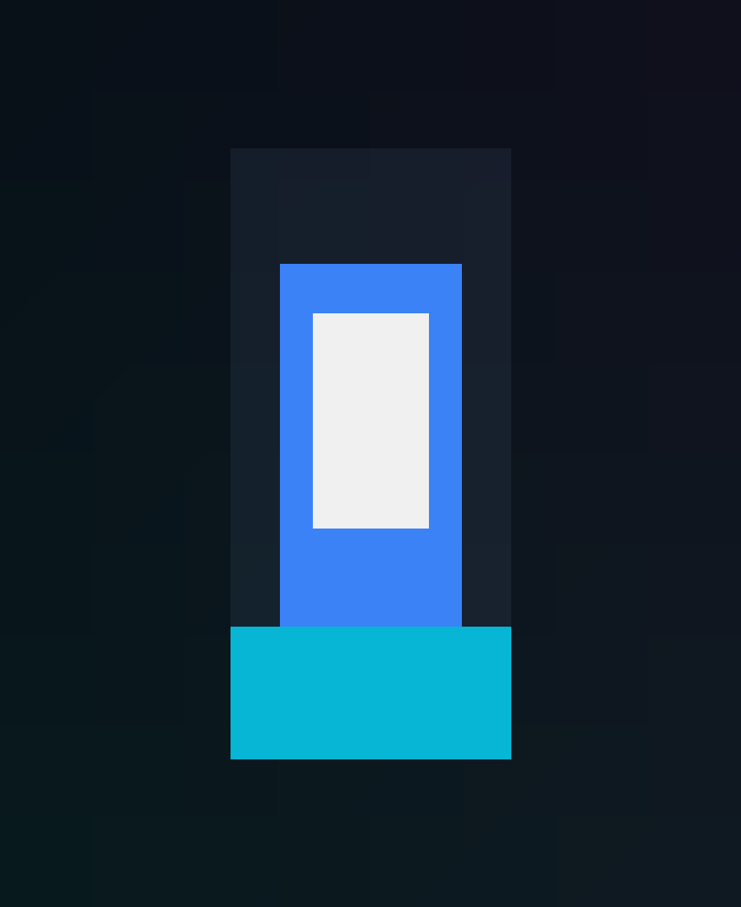

Currículo não gera entrevistas
Seu perfil não está sendo percebido como relevante para as oportunidades que você quer.
Programa de aceleração de carreira
Receba gratuitamente um diagnóstico inicial e descubra exatamente o que está impedindo sua evolução profissional.

Desafios comuns
Seu perfil não está sendo percebido como relevante para as oportunidades que você quer.
Seu posicionamento não comunica autoridade e as oportunidades acabam não surgindo.
O mercado é amplo, mas a direção certa exige clareza e estratégia.
Seu trabalho não está traduzido em prova de valor para recrutadores e clientes.
Há esforço, mas falta estrutura para transformar conhecimento em resultados.
As respostas não chegam com clareza, e isso enfraquece sua confiança e velocidade.
Provavelmente o problema não é falta de esforço. É falta de direção.
Diagnóstico gratuito
Você conta sua realidade, objetivos e principais bloqueios.
Mapeamos seu posicionamento, competências e oportunidades.
Identificamos os gaps técnicos, comportamentais e de posicionamento.
Você recebe uma direção concreta para o próximo passo.
Se houver alinhamento, damos sequência para a aceleração.
Método M.E.T.A.
Identificamos seu momento atual, seus objetivos e os gaps técnicos e comportamentais que precisam ser desenvolvidos.
Construímos um roadmap personalizado e um Plano de Desenvolvimento Individual para acelerar sua evolução.
Lapidamos aquilo que o mercado realmente valoriza para fortalecer sua presença profissional.
Transformamos preparação em oportunidades reais e experiência prática em posicionamento comercial.
Antes x Depois
Durante o programa
Levantamento preciso do seu estágio e das oportunidades de evolução.
Estratégia sob medida para maximizar seu crescimento em tempo hábil.
Orientação prática, feedback e acompanhamento contínuo.
Ambiente para trocar experiências, se posicionar e crescer junto.
Experiência aplicada para transformar preparação em valor real.
Uso estratégico de ferramentas modernas para acelerar seu desenvolvimento.
Conexões com oportunidades e visibilidade real no mercado.
Ajustes constantes para sua marca, currículo e performance profissional.
Posicionamento claro para entrevistas e seleção.
Treinamento de execução para se apresentar com confiança.
Frameworks, templates e materiais que aceleram a execução.
Canal de acompanhamento, aprendizado e networking contínuo.
Resultados
Analista de Dados
“O diagnóstico trouxe clareza para tudo. Eu parei de estudar de forma aleatória e comecei a agir com foco.”
Desenvolvedor Front-end
“Minha presença no LinkedIn mudou completamente. Passei a ser percebido como alguém com direção.”
Product Designer
“O plano foi essencial para eu encontrar o próximo passo com confiança e estratégia.”

Sobre Daniel Brandão
Daniel Brandão combina experiência prática, ensino superior e acompanhamento de carreira para transformar conhecimento em oportunidade.
Diagnóstico gratuito
Receba um diagnóstico inicial sem custo e entenda exatamente o próximo passo para evoluir com clareza.
Quero meu Diagnóstico Gratuito